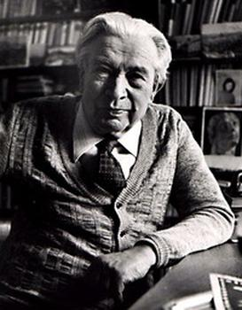
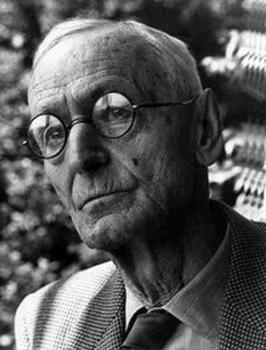

جوانترین برندگان نوبل ادبیات
 | رودیارد کیپلینگ | ۴۲ سالگی |
 | آلبر کامو | ۴۴ سالگی |
 | سینکلر لوئیس | ۴۵ سالگی |
 | سیگرید اوندست | ۴۶ سالگی |
 | پرل باک | ۴۶ سالگی |
مسنترین برندگان نوبل ادبیات
 | دوریس لسینگ | ۸۸ سالگی |
 | تئودور مومسن | ۸۵ سالگی |
|  | یاروسلاو سایفرت | ۸۳ سالگی |
| آلیس مونرو | ۸۲ سالگی | |
 | توماس ترانسترومر | ۸۰ سالگی |
برندگانی با بیشترین آثار خوانده شده
 | جان اشتاینبک | ۵,۰۴۶,۹۶۹ بار خوانده شده |
 | ارنست همینگوی | ۳,۵۰۳,۷۶۴ بار خوانده شده |
 | گابریل گارسیا مارکز | ۳,۰۱۶,۶۱۷ بار خوانده شده |
| آلبر کامو | ۱,۹۶۸,۱۹۷ بار خوانده شده |
 | کازوئو ایشیگورو | ۱,۶۵۹,۴۸۱ بار خوانده شده |
|  | هرمان هسه | ۱,۵۴۸,۹۳۳ بار خوانده شده |
 | تونی موریسون | ۱,۵۱۹,۸۱۲ بار خوانده شده |
 | ویلیام فاکنر | ۱,۰۹۰,۰۷۸ بار خوانده شده |
 | ژوزه ساراماگو | ۸۱۵,۹۷۷ بار خوانده شده |
 | ژان-پل سارتر | ۶۵۷,۶۳۸ بار خوانده شده |
برندگانی با بیشترین ریویو متنی در آثار
| جان اشتاینبک | ۱۰۰,۵۰۰ ریویو متنی |
| گابریل گارسیا مارکز | ۷۲,۱۵۲ ریویو متنی |
| ارنست همینگوی | ۷۱,۸۰۲ ریویو متنی |
| کازوئو ایشیگورو | ۶۲,۰۵۰ ریویو متنی |
| تونی موریسون | ۳۹,۷۲۶ ریویو متنی |
| آلبر کامو | ۳۸,۲۴۴ ریویو متنی |
 | ویلیام گلدینگ | ۳۷,۰۹۴ ریویو متنی |
| ژوزه ساراماگو | ۳۲,۷۴۰ ریویو متنی |
| هرمان هسه | ۳۲,۰۷۸ ریویو متنی | |
 | نجیب محفوظ | ۲۴,۴۲۲ ریویو متنی |
آثار بیشتر خوانده شده
| جان اشتاینبک |  | موش ها و آدم ها | ۲,۵۸۹,۹۴۵ بار خوانده شده |
| گابریل گارسیا مارکز |  | صد سال تنهایی | ۱,۴۵۸,۰۹۳ بار خوانده شده |
| ارنست همینگوی |  | پیرمرد و دریا | ۱,۱۳۶,۵۵۸ بار خوانده شده |
| آلبر کامو |  | بیگانه | ۱,۱۲۲,۶۲۰ بار خوانده شده |
| هرمان هسه |  | سیذارتا | ۹۲۱,۸۲۱ بار خوانده شده | |
| کازوئو ایشیگورو |  | هرگز رهایم مکن | ۸۹۶,۶۶۰ بار خوانده شده |
| جان اشتاینبک |  | شرق بهشت | ۸۵۷,۹۰۶ بار خوانده شده |
| گابریل گارسیا مارکز |  | عشق در زمان وبا | ۷۷۱,۱۷۵ بار خوانده شده |
| ارنست همینگوی |  | خورشید همچنان میدمد | ۶۳۴,۰۵۸ بار خوانده شده |
| تونی موریسون | دلبند | ۵۸۶,۴۸۲ بار خوانده شده |
آثاری با بیشترین ریویو متنی
| ویلیام گلدینگ |  | سالار مگس ها | ۳۵,۶۱۰ ریویو متنی |
| جان اشتاینبک | | موش ها و آدم ها | ۳۲,۶۱۹ ریویو متنی |
| کازوئو ایشیگورو | | هرگز رهایم مکن | ۳۰,۰۸۰ ریویو متنی |
| گابریل گارسیا مارکز | | صد سال تنهایی | ۲۸,۶۸۷ ریویو متنی |
| ارنست همینگوی | | پیرمرد و دریا | ۲۳,۵۲۲ ریویو متنی |
| آلبر کامو | | بیگانه | ۲۱,۶۲۶ ریویو متنی |
| گابریل گارسیا مارکز | | عشق در زمان وبا | ۱۹,۰۰۵ ریویو متنی |
| جان اشتاینبک | | شرق بهشت | ۱۸,۴۳۰ ریویو متنی |
| جان اشتاینبک |  | خوشههای خشم | ۱۶,۳۹۲ ریویو متنی |
| هرمان هسه | | سیذارتا | ۱۶,۳۵۶ ریویو متنی |
آثاری با بیشترین ریویو متنی
| رمان | ۷۲ نویسنده | |
| شعر | ۴۹ نویسنده | |
| داستان کوتاه | ۳۴ نویسنده | |
| دراما | ۲۱ نویسنده | |
| انشا | ۱۴ نویسنده | |
| درام | ۷ نویسنده | |
| فلسفه | ۵ نویسنده | |
| فیلمنامه | ۵ نویسنده | |
| ترجمه | ۴ نویسنده | |
| تاریخ | ۳ نویسنده | |
| نقد ادبی | ۳ نویسنده | |
| نوشتار | ۲ نویسنده | |
| حقوق | ۱ نویسنده | |
| ترانهسرایی | ۱ نویسنده | |
| لغتشناسی | ۱ نویسنده | |
| مقاله | ۱ نویسنده | |
| موسیقی | ۱ نویسنده |